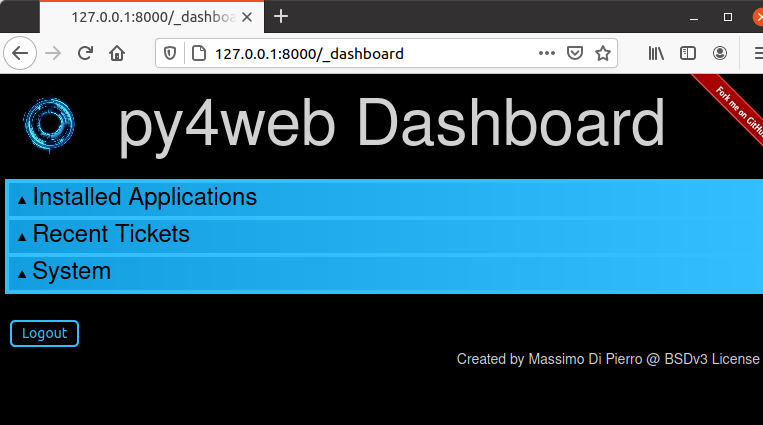

The Dashboard
The Dashboard is the standard web based IDE; you will surely use it extensively to manage the applications and check your databases. Looking at its interface is a good way to start exploring py4web and its components.
The main Web page
When you run the standard py4web program, it starts a web server with a main web page listening on http://127.0.0.1:8000 (which means that it is listening on the TCP port 8000 on your local PC, using the HTTP protocol).
You can connect to this main page only from your local PC, using a web browser like Firefox or Google Chrome:

The buttons are:
Dashboard (http://127.0.0.1:8000/_dashboard), which we’ll describe in this chapter.
Documentation (http://127.0.0.1:8000/_documentation?version=1.20201112.1), for browsing the local copy of this Manual.
Source (https://github.com/web2py/py4web), pointing to the GitHub repository.
Discuss (https://groups.google.com/forum/#!forum/py4web), pointing to the Google mail group.
Login into the Dashboard
Pressing the Dashboard button will forward you to the Dashboard login. Here you must insert the password that you’ve already setup (see set_password command option). If you don’t remember the password, you have to stop the program with CTRL-C, setup a new one and run the py4web again.

After inserting the right Dashboard’s password, it will be displayed with all the tabs compressed.
Click on a tab title to expand. Tabs are context dependent. For example, open tab “Installed Applications” and click on an installed application to select it.
This will create new tabs “Routes”, “Files”, and “Model” for the selected app.

The “Files” tab allows you to browse the folder that contains the selected app and edit any file that comprises the app. If you edit a file by default it will be automatically reloaded at its first usage (unless you’ve changed the watch option with the run command option; in this case you must click on “Reload Apps” under the “Installed Applications” tab for the change to take effect). If an app fails to load, its corresponding button is displayed in red. Click on it to see the corresponding error.

The Dashboard exposes the db of all the apps using pydal RESTAPI. It also provides a web interface to perform search and CRUD operations.

If a user visits an app and triggers a bug, the user is issued a ticket.

The ticket is logged in py4web database. The Dashboard displays the most common recent issues and allows searching tickets.